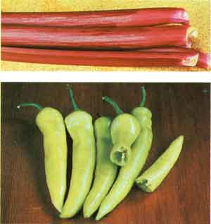
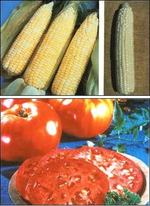

Despite bad weather, MOM's vegetable-seed evaluator found a number of great newcomers!
If you live in almost any part of the continental United States, I probably don't have to tell you that the summer of '83 wasn't particularly kind to gardeners and farmers. After early cool-weather crops were all but wiped out by one of the coldest and wettest springs in history, drought conditions prevailed. Despite the unforgiving weather, though, my garden did manage to produce some very nice yields . . . thanks largely to many of the new varieties in my vegetable-growing trials for 1983.
LETTUCE, RADISHES,URNIPS, AND GREENS
I started out the season by preparing my lettuce bed in late February, and it was soon obvious that the star salad greens would be Thompson & Morgan's Wallop, which has a large, heavy head that still manages to be tender and sweet. The only other lettuce to shine in my trials was Montello from Olds Seed Company. This cultivar is ready to harvest in 75 days . . . heads well . . . is highly resistant to disease . . . and tastes great, too!
My radishes are sown at the same time as the lettuce, and the finest new variety I've found in a long time is Liberty Seed's Snow Belle, an all-white radish of unmatched quality that matures in 21 days. If, however, you like your radishes a little on the pungent side, try Agway's Red Boy. It's a good, steady producer . . . and matures only a day or so after Snow Belle.
Planting turnips is yet another spring garden tradition, and Vermont Bean Seed's Petite White is one of the most interesting ones I've ever grown. It matures almost as early as radishes (30 days) and isn't a whole lot bigger than some of them! Petite White's taste, however, is typically turnip . . . and should qualify this vegetable as a worthy addition to any garden.
Among the Swiss chard tested, the best producer was Silver Lyon from Jonathan Green and Sons Seeds. Its yield proved to be tremendous and lasted well into the summer months. Spinach, on the other hand, doesn't thrive in hot weather but is a fine early or late crop . . . and both the quality and quantity of leaves produced by Agway's Early Hybrid 30 are unrivaled. (It's especially suited for very early planting but will also do quite well in the fall.)
PEAS AND CABBAGE
The wet, cold weather notwithstanding, my peas managed to produce fairly well in '83. One type, Olympia from Agway, is a fine new development for home use. Its big, plump peas come eight to ten per pod and are sweet and tender, and the 18" dwarf plants mature their heavy loads in 62 days. Another pea of this type that deserves a mention is Salvo from Rogers Brothers. It's a full-season, 74-day cultivar that's downright phenomenal. The 22" plants are covered with huge crops of small pods that are chock-full of sweet, tender peas. In addition, the plants are resistant to the always dangerous common Pea Wilt, and because Salvo is excellent fresh, canned, or frozen, this cultivar deserves to be called my all-star pea for 1983!
Rogers Brothers also came up with two of the finest new edible-pod types, Snowflake and Honeypod. The former's tidy plants produce a lot of sugary peas, while Honeypod is a great new dwarf Sugar Snap type. Either is well worth a try. The final edible-pod pea that performed well in my trials was Early Snap from Agway. This one matures in only 50 days and has all the fine qualities of Sugar Snap, with the added advantage that the plants are much stockier and easier to manage than those of the old standbys.
Because cabbage is quite tolerant of frost, the cold, damp weather didn't hinder that vegetable as much as it did some of the other early bearers. Jonathan Green's Greyhound has long been the favorite early, pointed type in Europe, and it does just as well on this side of the Atlantic. I was impressed with its tender, delicious small heads and early maturity. Even earlier is Hispi Hybrid from Thompson & Morgan. This one matures in 60 days . . . four or five days ahead of Greyhound and the older Jersey Wakefield. Like those two, Hispi makes fantastic eating, and its size can reach nearly double that of either of those fine varieties. Park's Golden Cross Hybrid matures in just 50 days, and its tight heads are creamy, sweet, and ideal for small gardens or close plantings. A similar variety is Thompson & Morgan's Quickstep Hybrid, which is firmer still, making it a better selection for coleslaw. Heavy Weighter Hybrid, from Park, is a later (75 days) cole with a round, slightly flattened head weighing five to seven pounds and is resistant to both frost and summer heat. And if you like a little color in your cabbage patch ( and in your salads), try Blue Pak from Ferry-Morse. Finally, for kraut and cooking, I can heartily recommend the very firm Hannibal from Sluis & Groot.
CAULIFLOWER, BROCCOLI,AND BRUSSELS SPROUTS
Gleckler's Seedsmen offers Snow Giant one of the finest cauliflower varieties I've ever grown. The eating quality, production, an disease resistance of this cultivar are all superb. And while White Fox from Sluis Groot can't quite match Snow Giant in eatin quality, its ability to tolerate more heat make it a good choice for 1984, too.
Two impressive new broccoli varieties also merged in my '83 trials. Park's Green Dwaf - with fine-flavored buds growing on plants that average a scant 8" tall - is a new early sort that's ideal for small gardens. Another welcome addition to my broccoli patch was Sluis & Groot's SG 1. The heads of this cultivar are quite large, and they mature in midseason.
Though brussels sprouts have never been a favorite of the Elswick family, I do include new varieties in my trials each year. However, only one performed up to snuff this time around: Fasolti Hybrid from Jonathan Green, which matures in midseason and is a superb producer of medium-sized sprouts.
ONIONS, LEEKS,BEETS, AND CARROTS
If you usually grow your onion crop from sets or bulblets, you've probably grown the late-maturing Ebenezer, a quality keeper. But if, like me, you prefer to raise your crop from seeds, you may have found it difficult to locate this popular variety. One of the more reliable sources is Nationwide Seed. This small but progressive firm is not well known, but I've come to rely on it for quality, viable seeds. Then again, those living in short-season areas might want to consider Olds's Early Pak, which has to be the best-keeping early-maturing bulb around . . . and it also boasts a mild, sweet quality.
Leeks are as popular in France as onions are here, and one of the better newly imported French varieties is Electra, an offering from Liberty Seed. While it's not as large as some of the more common American types, Electra-with its delicate onionlike flavor-is one of the best leeks ever developed.
Though I put my root crops in early, this past season's extremely dry weather was tough on both beets and carrots. Nevertheless, several new beet varieties did produce well. Monopoly (a monogerm Detroit type) from Sluis & Groot has a deep red color throughout and is uniform in size and shape, making it an excellent choice for those folks who raise beets for market: The company also offers Little Ball, the best "baby beet" I've grown. The cute, sweet, and tender little fellas are super for using whole. Yet another discovery, Petoseed's Crimson Tide, has almost round roots that show little or no zoning and are equally good fresh or canned.
Only one of the carrot varieties in my test plots actually bucked up to the inhospitable weather: Minicor, a baby type from Rogers Brothers, which is excellent for those who have clay soil or limited garden space. I did, however, experiment with two other varieties that I feel might be winners under normal growing conditions: Sweet-N-Crisp fron Henry Field (a long type) and Johnny's Selected Seeds' JSS 186. (The latter is one of that company's exclusive hybrids and offer the good qualities of both an Imperator and a Nantes.)
CORN, TOMATOES,AND PEPPERS
As the weather warmed, I planted severa early types of corn, and I've chosen the best of those to recommend for your early plantings. One of those winners was Rogers Brothers' Spirit: It has a short, sturdy stalk that produces 6" to 7" chubby ears crammed with good eating. Another top choice is Robson Seed Farm's Seneca Horizon, which (like Spirit) matures in about 65 days, with tender kernels on large ears. And for those favoring sweet corn, Agway's White Satin, with a 70-day range, has excellent cold-weather tolerance, and its 8" ears are filled to the tip with pearly white succulence.
There are oodles of fine new midseason corn varieties, but one stands head and shoulders above the rest: Seneca 258 from Robson. In fact, it was the outstanding new variety I grew in '83, and its tender, yellow kernels are perfect for eating fresh, canning, or freezing. Other good midseason yellows were Rogers' Eclipse, Henry Field's Southern Delicious, and Ferry-Morse's Golden Glade. Field's also offers a fine bi-color. Its new Double Delight proved to be productive and drought-resistant.
I discovered two new midseason white types that did especially well: Chalice from Rogers and Ferry-Morse's Sterling Silver. What's more, I think that Gurney Seed's Snow Queen EH may soon rival Silver Queen as the very best white ever developed, since its tasty ears stay tender much longer . . . both on and off the stalk.
One of the few good results of last year's drought was that my tomatoes had few of the destructive diseases that are usually rampant in the Southeast. And rarely have I grown as impressive a variety as Burpee's Supersteak Hybrid VFN, which should take its place right beside Big Boy and Big Girl as a Burpee favorite. The big, productive plants yielded huge, solid, meaty fruits weighing up to two pounds. Mountain Pride (a Petoseed hybrid offered by Wyatt-Quarles) and Corda (from Sluis & Groot) also produced dandy midseason, medium-sized tomatoes that proved to be especially good for canning. My final main-season variety recommendation is Petoseed's Celebrity, a recent AAS winner. It's also great for canning.
Winning the prize as the most unusual tomato was Angora from Gleckler's. Both its plants, which are covered with an angoralike "fur", and its small, vivid red fruits are quite lovely. Gleckler's also offers two fine pear types for canning: Egg Tomato and Laketa. The only other pear-shaped tomato to shine in my trials was Ferry-Morse's Parmech, which produces huge fruits.
Unfortunately, my peppers were almost a total failure last year. In fact, Park's Sweet Banana Whopper-which grows faster, produces more, and bears over a longer period than do most banana varieties-was one of the few to do well. Of the green bell peppers I planted, Burpee's Crispy Hybrid and Petoseed's Early Banquet were far and away the best of the lot.
BEANS AND MELONS
In spite of the weather, beans did perform well in my '83 trials. The best of the lot was Frenchy from Liberty, which has beans that stay small and tender for a long period and are good fresh, frozen, or canned. (A similar variety is Thompson & Morgan's Rudolpho.) Cool-climate growers, however, may find Thompson & Morgan's Lavra a better producer. Even when overly mature, its pods are still quite tender. And if you like Blue Lake types, Ferry-Morse's Blue Dawn just can't get any better.
While none of the really new pole beans in my trials truly deserves mention, I'd like to recommend Agway's Bush Kentucky #125 . . . which is a dwarf version of the old Kentucky Wonder Pole. Its pods, if picked at their peak, are tender and tasty. Furthermore, they're ready to harvest in 58 days, a week sooner than most pole types.
Though the lack of rain affected the size of my melons, those garden treats still did quite well. One of the cultivars to shine was Johnny's Flyer Hybrid, a Chaca type. Not only are its two- to three-pound fruits delicious, but the plants are strong and disease resistant.
Another melon on the same order is Sluis & Groot's Pancha.
The best new American-type cantaloupes I ran across are Gold King from Petoseed and Red Queen from Gleckler's. The first is destined to take its place alongside other Petoseed greats, such as Suticoy and Supermarket . . . and the second, a redfleshed, Asian development, deserves all of the fame it'll probably receive. Its large fruits are sweet and tasty, maturing within 90 to 100 days.
For a superior new compact cantaloupe, try Park's Bushwhopper, with sweet, tender fruits that come three or four to a plant. I also think that Petoseed's Bush Star, a disease-resistant plant with quality fruit, will become a leading compact type in the future.
Oddly enough, the best watermelon in our patch was an updated version of an old favorite, Peacock. Burrell calls this offering the Improved Peacock, and I think it's perfect for home gardeners. The flesh has a delicious sweet flavor, the rind is tough and good for shipping, and the plant is quite disease-resistant. Finally, I'd like to note one perennial that has impressed me. Wayside Garden's Cherry Crimson rhubarb is one of the best "dessert" crops I've found.
CUCUMBERS,ZUCCHINI, AND SQUASH
There were several very fine cukes in my '83 garden. Burpee's Pride, for example, is an extraordinary new hybrid that bears over a long period of time while maintaining its quality. Vermont Bean Seed's Early Triumph is another great new slicer. And the hardworking folks at Ferry-Morse have come up with a terrific new pickier, Spear-It. It's perfect for small, whole pickles and makes a great addition to any salad when mature. Another new pickier of note is Agway's aptly named Picarow. Its tremendous production and tough, diseaseresistant vines are the main factors recommending this cultivar.
Unlike last year, when at least a dozen zucchini varieties starred in my trials, only two warrant mentioning for 1984: Zuchlong (from Ferry-Morse) and Black Magic (from Vermont Bean Seed and Henry Field).
As for yellow winter squash, I had great success with Agway's Autumn Pride. The vines are compact and the size of a summer squash plant . . . while the fruits look like long pumpkins, and their flesh is very creamy and high in natural sugars.
AND FINALLY . . .
The last crop I usually plant is sweet potatoes. And Park's new variety, Vardaman, was head and shoulders above the rest this past year. Its bush plants bear abundant yields of large potatoes that are deep orange and excellent in quality.
In summary, I'm amazed that many new breeds of vegetables performed so well in spite of the capricious weather. Their successes say a lot for the seed producers who work so hard to reward our gardening efforts with bountiful, tasty harvests.
Agway Inc.*
Dept. TMEN
P.O. Box 487
Elizabethtown, Pennsylvania 17022
Gurney Seed & Nursery
Dept. TMEN
Yankton, South Dakota 57079
Robson Seed Farm Dept. TMEN 1 Seneca Circle Hall, New York 14463
Burpee Seed Company
Dept. TMEN
300 Park Avenue
Warminster, Pennsylvania 18974
Johnny's Selected Seeds Dept. TMEN Albion, Maine 04910 (Please use a postcard.)
Rogers Brothers*
Dept. TMEN
P.O. Box 1647
Idaho Falls, Idaho 83401
D.V. Burrell Seed Company
Dept. TMEN
P.O. Box 150
Rocky Ford, Colorado 81067
Liberty Seed Company
Dept. TMEN
P.O. Box 806-B
New Philadelphia, Ohio 44663
Sluis & Groot* Dept. TMEN 124 Griffin Street Salinas, California 93901
Ferry-Morse*
Dept. TMEN
111-T Ferry-Morse Way
Mt. View, California 94082
Nationwide Seed Company Dept. TMEN P.O. Box 91073 Louisville, Kentucky 40291
Thompson & Morgan
Dept. TMEN
P.O. Box 531
Pittston, Pennsylvania 18640
Henry Field & Company Dept. TMEN 407 Sycamore Street Shenandoah, Iowa 51602
L.L. Olds Seed Company Dept. TMEN P.O. Box 7790 Madison, Wisconsin 53707
Vermont Bean Seed Company
Dept. TMEN
Box 308
Bomoseen, Vermont 05732
Gleckler's Seedsmen Dept. TMEN Metamore, Ohio 43540
Geo. W. Park Seed Company
Dept. TMEN
P.O. Box 31
Greenwood, South Carolina 29647
Wayside Gardens
Dept. TMEN
Hodges, South Carolina 29695
Jonathan Green and Sons
Seeds Dept. TMEN
Box 9 Farmingdale, New Jersey 07787
Petoseed Company* Dept. TMEN P.O. Box 4206 Saticoy, California 93004
Wyatt-Quarles Seed Company
Dept. TMEN
P.O. Box 739
Garner, North Carolina 27529
* These companies are wholesalers. Write to them for names of distributors in your area
|
 PHOTOS COURESY OF BURPEE SEED COMPANY, HENRY FIELD & COMPANY, GURNEY SEED & NURSERY, GEO. W. PARK SEED COMPANY AND WAYSIDE GARDENS Park's Sweet Banana Whopper was one of the few peppers to perform well despite 1983's cold, wet spring and extremely dry summer . . . . Wayside Gardens' Crimson Cherry Rhubarb is one of the best varieties of this flavorful perennial that the author has ever tested . . . . Gurney Seed's Snow Queen EH is an excellent midseason cultivar and has the added advantage of staying tender longer than most older white corn varieties do .... The tomato is almost everybody's favorite garden crop (in fact, some people grow nothing but 'maters), and Burpee's Supersteak Hybrid VFN combines superb size and flavor with good disease resistance . . . . Field's Double Delight proved to be a productive and drought-resistant bicolor. |
 PHOTOS COURESY OF BURPEE SEED COMPANY, HENRY FIELD & COMPANY, GURNEY SEED & NURSERY, GEO. W. PARK SEED COMPANY AND WAYSIDE GARDENS |
|